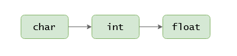

Casting
La conversió entre tipus primitius es realitza mitjançant el casting.
Java proporciona dos tipus de casting: implicit i explícit. L'implicit es realitza
automàticament, mentre que l'explicit l'hem d'escriure nosaltres.
Casting implicit
El compilador realitza automàticament el casting implícit quan el tipus al que s'ha de convertir
una dada és més ampli que el tipus original.
És a dir, Java farà el casting implícit automàticament quan convertim:

Per exemple:
float foo = 'a'; // convertim el char 'a' a float. El valor de foo sera 97.0f
int bar = 'a'; // convertim el char 'a' a int. EL valor de bar sera 97
float baz = 97; // convertim el int 97 a float. El valor de baz sera 97.0f
Si tractem de fer un casting implícit a l'inrevés, el compilador ens donarà un error:
char bar = 65633; // error, casting implicit de int a char no permes
char baz = 97f; // error, casting implicit de float a char no permes
int qux = 97f; // error, casting implicit de float a int no permes
El casting amb els tipus boolean i String no es pot realitzar.
Casting explícit
Hem vist que el casting implícit no es pot realitzar quan volem convertir a un tipus més estret (per exemple,
convertir de float a int, ja que es perden els decimals). Però a voltes necessitem
fer-ho, tot sabent que perdrem precisió. En aquest cas hem d'explicitar el casting.
Per a realitzar un casting explícit, s'ha d'escriure el tipus al que es vol convertir entre parèntesi, just
abans del valor que es vol convertir.
(tipus) valor
Els següents exemples il·lustren l'ús del casting explícit:
// de int a char
char bar = (char) 65633; // bar es 97 (el valor màxim de char es 65535)
// de float a char
char baz = (char) 97.53f; // baz es 97, es perden els decimals
// de float a int
int quux = (int) 14.67565f; // quux es 14, es perden els decimals
// de int a char
int fooa = 65633;
char bar = (char) fooa; // bar es 97, el valor màxim de char es 65535
// de float a char
float foob = 97.53f;
char baz = (char) foob; // baz es 97, es perden els decimals
// de float a int
float fooc = 14.67565f;
int quux = (int) fooc; // quux es 14, es perden els decimals
float foo = 5 / 2; // foo es 2.0f
float bar = (float) 5 / 2; // bar es 2.5f
Selecciona les línies on es requereix el casting explícit.
float a = 10;
int b = a;
char d = a;
float c = b;
int e = d;
char f = c;
1
2
3
4
5
6
Conversió textual
A més a més de les conversions amb casting, Java incorpora una sèrie de mètodes per a fer altres conversions.
Concatenació
Es pot convertir qualsevol valor en un String només concatenant-lo amb un String buit "".
String foo = "" + 'a'; // foo es "a"
String bar = "" + 865; // bar es "865"
String baz = "" + 23.78f; // baz es "23.78"
String quux = "" + true; // quux es "true"
String.valueOf()
De forma equivalent a la concatenació, es pot utilitzar el mètode String.valueOf() per a convertir a String.
String foo = String.valueOf('a'); // foo es "a"
String bar = String.valueOf(865); // bar es "865"
String baz = String.valueOf(23.78f); // baz es "23.78"
String quux = String.valueOf(true); // quux es "true"
charAt()
Lògicament, no podem convertir un String en un char, ja que l'String pot tenir varis caracters.
Però podem usar el mètode charAt() per a obtenir un caracter que estigui en una determinada posició.
char foo = "java8".charAt(0); // foo es 'j'
char baz = "java8".charAt(4); // baz es '8'
Cal tenir en compte que les posicions comencen per 0.
Character.getNumericValue()
Al punt anterior hem vist que si fem el casting implícit per a convertir un char en un int,
obtenim el valor Unicode del caracter.
Si volem obtenir el valor que representa el caracter es pot fer amb el mètode Character.getNumericValue().
char foo = '9';
int bar = foo; // bar es 57, amb el casting obtenim el valor unicode
int baz = Character.getNumericValue(foo); // baz es 9, obtenim el valor representat pel caracter
parseInt() i parseFloat()
Per a obtenir el valor numèric representat per un String podem utilitzar parseInt() o parseFloat().
String foo = "213";
int bar = Integer.parseInt(foo); // bar es 213
String foo = "23.78";
float bar = Float.parseFloat(foo); // bar es 23.78f